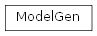

modelGenerator module¶
modelGenerator Module¶
| Author: | Dominic Hunt |
|---|
Functions¶
params(parameters, otherOptions) |
For the given model returns a list of all that goes in to the model. |
Classes¶
ModelGen(model, parameters, otherOptions) |
Generates model class instances based on a model and a set of varying parameters |
Class Inheritance Diagram¶

| Author: | Dominic Hunt |
|---|
-
class
modelGenerator.ModelGen(model, parameters, otherOptions)[source]¶ Bases:
objectGenerates model class instances based on a model and a set of varying parameters
Parameters: - model (model.modelTemplate.model) –
- parameters (dictionary containing floats or lists of floats) – Parameters are the options that you are or are likely to change across model instances. When a parameter contains a list, an instance of the model will be created for every combination of this parameter with all the others.
- otherOptions (dictionary of float, string or binary valued elements) – These contain all the the model options that define the version of the model being studied.
-
iterInitDetails()[source]¶ Yields a list containing a model object and parameters to initialise them
Returns: - model (model.modelTemplate.model) – The model to be initialised
- parameters (ordered dictionary of floats or bools) – The model instance parameters
- otherOptions (dictionary of floats, strings and binary values)
-
modelGenerator.params(parameters, otherOptions)[source]¶ For the given model returns a list of all that goes in to the model.
Parameters: - parameters (dictionary of floats or lists of floats) – Parameters are the options that you are or are likely to change across model instances. When a parameter contains a list, an instance of the model will be created for every combination of this parameter with all the other parameters.
- otherOptions (dictionary of float, string or binary valued elements) – These contain all the the model options that describe the model being studied but do not vary across model instances.
Returns: - modelDetails (list of dict) – Each dict contains the full set of arguments needed to initialise the model instance
- paramCombDicts (list of dicts) – A list of dictionaries containing the parameter combinations